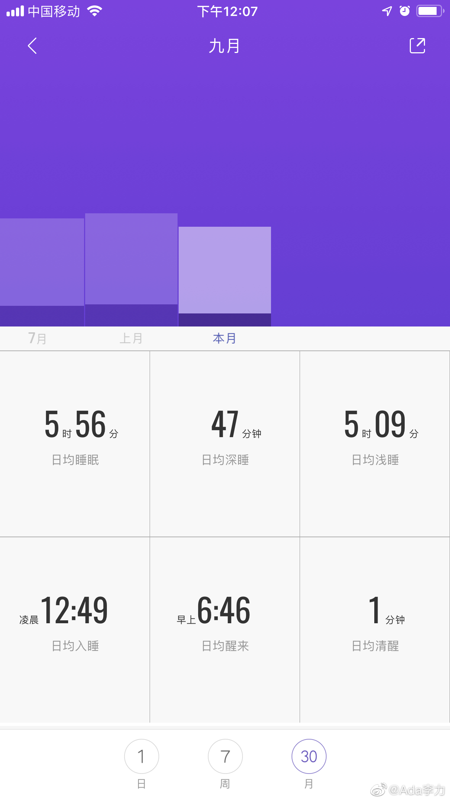

#不明所以#
这个月早起的计划做得不错，基本六点半起床，但是早睡做得并不好，往往还是12点以后才能入睡，这样的话每晚上睡眠时间只有5~6个小时。加上上午再去健身房锻炼一个小时，下午往往就困得要命，9月份以来几乎每天都要睡个午觉。
关于睡眠的说法也有很多种，比如之前一直很多人相信，觉是补不过来的。但从我自身的经验来讲，我感觉补觉还是有效的。比如周一到周五每天晚上睡眠都不够的话，那么周六日猛睡两天就能够缓和很多，或者像最近这样，每天晚上睡眠不够，但是睡个午觉也能够缓和很多。
有本书《睡眠革命》挺火的，大致意思也是说睡眠是否充足是看28天里是否睡够了，只要总量够，那就可以保证比较好的睡眠质量。睡眠时间的衡量不应该是小时，而是睡眠周期。一个睡眠周期是90分钟，一个晚上四个或者五个睡眠周期最佳。一个有质量的睡眠周期，要包括深睡和浅睡阶段，深睡时间比例越高越好。
我用手环监测到自己的每晚的睡眠周期，大概也就是三个到四个之间，睡眠时间在5-6个小时左右。我觉得应该是睡眠及格的水平吧。
在用手环监测睡眠之前，我一直觉得我的睡眠质量是很好的，但每次手环给我的反馈都是，有80%以上的人睡眠质量比我好。对这东西的反馈，我的态度跟对算命的一样，对我有好处的话，我就信，说对我没好处的话我就不信。一些涉及到主观感受的观点，还是相信自己好。
这个月早起的计划做得不错，基本六点半起床，但是早睡做得并不好，往往还是12点以后才能入睡，这样的话每晚上睡眠时间只有5~6个小时。加上上午再去健身房锻炼一个小时，下午往往就困得要命，9月份以来几乎每天都要睡个午觉。
关于睡眠的说法也有很多种，比如之前一直很多人相信，觉是补不过来的。但从我自身的经验来讲，我感觉补觉还是有效的。比如周一到周五每天晚上睡眠都不够的话，那么周六日猛睡两天就能够缓和很多，或者像最近这样，每天晚上睡眠不够，但是睡个午觉也能够缓和很多。
有本书《睡眠革命》挺火的，大致意思也是说睡眠是否充足是看28天里是否睡够了，只要总量够，那就可以保证比较好的睡眠质量。睡眠时间的衡量不应该是小时，而是睡眠周期。一个睡眠周期是90分钟，一个晚上四个或者五个睡眠周期最佳。一个有质量的睡眠周期，要包括深睡和浅睡阶段，深睡时间比例越高越好。
我用手环监测到自己的每晚的睡眠周期，大概也就是三个到四个之间，睡眠时间在5-6个小时左右。我觉得应该是睡眠及格的水平吧。
在用手环监测睡眠之前，我一直觉得我的睡眠质量是很好的，但每次手环给我的反馈都是，有80%以上的人睡眠质量比我好。对这东西的反馈，我的态度跟对算命的一样，对我有好处的话，我就信，说对我没好处的话我就不信。一些涉及到主观感受的观点，还是相信自己好。
- 